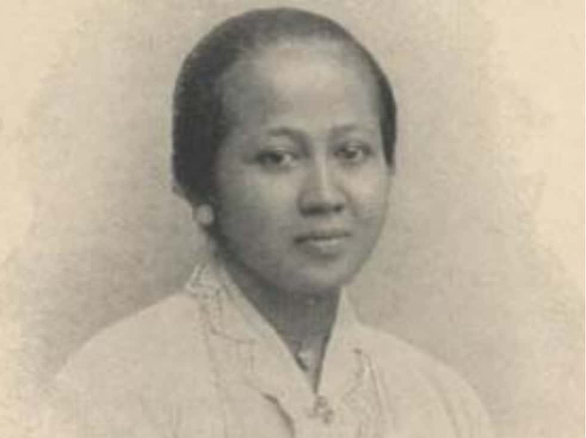

Biografi R.A. Kartini
Raden Adjeng Kartini lahir pada 21 April 1879 di Jepara, Jawa Tengah. Ia adalah putri dari Raden Mas Adipati Ario Sosroningrat, seorang Bupati Jepara. Sejak kecil, Kartini menunjukkan ketertarikan yang besar terhadap pendidikan dan literasi. Sayangnya, ia tidak bisa melanjutkan pendidikan formal karena tradisi saat itu melarang perempuan untuk sekolah tinggi.
Meskipun begitu, Kartini tetap belajar secara mandiri dan mulai menulis surat kepada teman-temannya di Belanda. Lewat surat-surat inilah gagasan emansipasi perempuan, pentingnya pendidikan, dan kesetaraan sosial mulai dikenal. Surat-suratnya kemudian dibukukan dengan judul Habis Gelap Terbitlah Terang.
Kutipan dan Pemikiran Kartini
"Tahukah engkau semboyanku? Aku mau! Dua kata yang ringkas itu telah beberapa kali mendukung dan membawaku melintasi gunung keberatan dan kesusahan."
Kartini percaya bahwa perempuan memiliki hak untuk menentukan masa depan mereka sendiri. Ia menentang penindasan terhadap perempuan melalui pernikahan paksa dan keterbatasan pendidikan.
Kartini Masa Kini
Hari ini, semangat Kartini hidup dalam berbagai bentuk. Perempuan Indonesia kini tidak hanya aktif di rumah, tapi juga di berbagai bidang seperti teknologi, pendidikan, politik, ekonomi, dan budaya.
- Perempuan jadi CEO, menteri, guru, dokter, ilmuwan, dan seniman.
- Kampanye untuk kesetaraan gender makin banyak dilakukan oleh komunitas perempuan muda.
- Program coding untuk perempuan dan startup digital perempuan semakin berkembang.
Galeri Perjuangan
Raden Adjeng Kartini
Patung Kartini di Jepara

Poster hari kartini